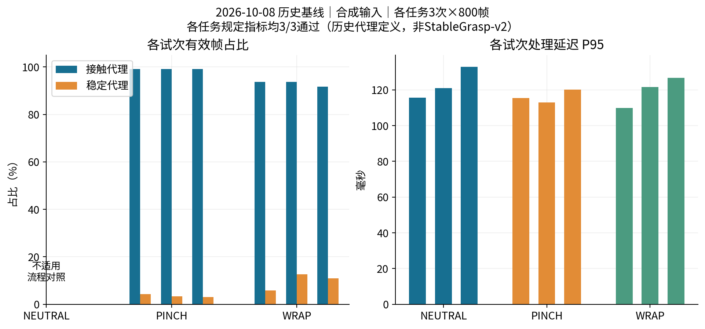

2026-10-08历史基线｜合成输入｜固定基座｜三任务各3次、每次800帧，共7200帧
| 任务 | 任务规定指标通过 | 接触通过 | 历史稳定通过 | 接触帧占比 | 历史稳定帧占比 | 平均试次P95 |
|---|---|---|---|---|---|---|
| NEUTRAL | 3/3 | 不适用 | 不适用 | 不适用 | 不适用 | 123.06 ms |
| PINCH | 3/3 | 3/3 | 0/3 | 99.15% | 3.53% | 116.21 ms |
| WRAP | 3/3 | 3/3 | 3/3 | 93.03% | 9.76% | 119.36 ms |

NEUTRAL仅要求流程完成；PINCH要求接触；WRAP要求历史稳定代理。任务规定指标100%不等于三项抓取成功率100%。接触/稳定成功按连续活动帧判定，帧占比按有效帧计算。固定手掌、夹具和代理指标不能证明提举/搬运；旧稳定定义不与新版StableGrasp-v2直接比较。P95超过60Hz单帧16.67ms预算。